UPM · HCI project · Team of 4 · Feb–Jun 2026
The Interactive Mentor
A dual-screen assistant that guides older adults through two mandatory Italian public services on their own: booking a medical appointment (CUP) and paying a public bill (pagoPA).
My role: concept and prototypes. In testing: lo-fi facilitator, hi-fi observer, SUS and UEQ analysis.
- 100%task success (12/12)
- 78.75SUS, “Good” (average 68)
- 5/6UEQ scales Good–Excellent
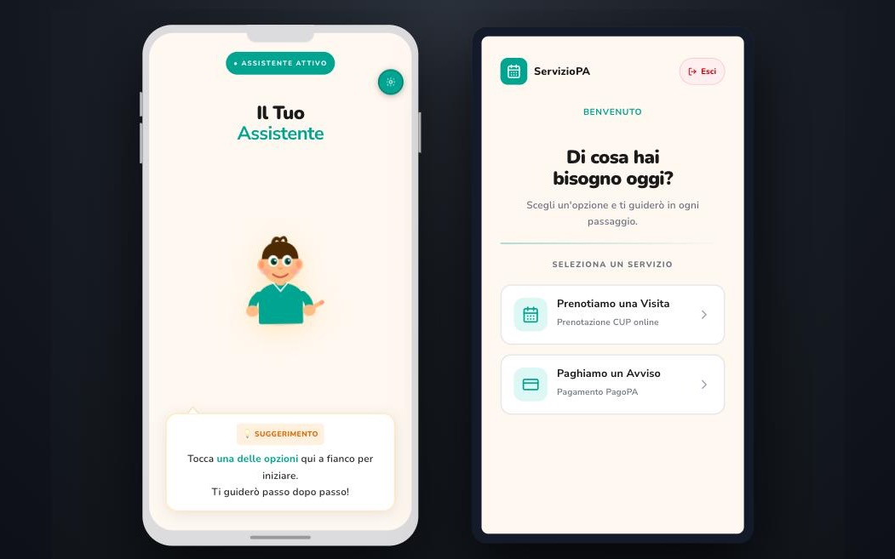
The brief · Human-Computer Interaction, UPM
A full user-centred design cycle on a real problem
The course asked each team to analyse a context of use, test low-fidelity concepts with users, then build and evaluate a high-fidelity prototype. We chose older adults facing mandatory digital public services.
- Feb–MarContext of useinterviews + observationspersonas, task model, journey maps
- AprLo-fi conceptsMentor vs Digital GymMentor chosen, then payment icons and form fields reworked
- May–JunHi-fi think-aloud6 participants, 53–82, remote6 problems found (2 major), each with a recommended fix
Lo-fi → hi-fi: what improved (n = 6, directional)
- Mistakes per person · CUP1.67 to 1.50−10%
- Mistakes per person · pagoPA2.17 to 1.83−16%
- Steps taken vs shortest path · pagoPA1.15× to 1.08×closer to optimal
Hi-fi usability test · 12 May – 1 Jun 2026
Independence landed; the form fields were the barrier
- 6/6described the experience positively
- 83%endorsed the dual-screen setup (5 of 6)
Most mistakes (16 of 20) came from the two oldest participants, aged 74 and 82. The main hurdle was typing the Codice Fiscale into form fields with no format hint.
“It gave me an extra boost to be independent, without the need to go anywhere or rely on others (offices, friends, relatives).” — Participant P6
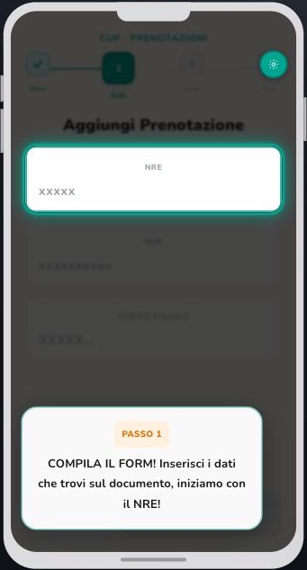
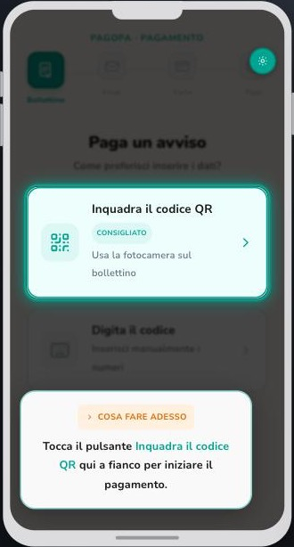
My role
What I did
- Research
- Interviewer and note-taker in the context-of-use study
- Testing
- Designed the think-aloud protocol with the team · lo-fi: facilitated 2 sessions, Wizard-of-Oz “computer” in 2 more · hi-fi: observer in 4 of 6 sessions · analysed the SUS and UEQ data
- Concept
- Proposed the initial concept
- Prototypes
- Main contributor to the low- and high-fidelity prototypes
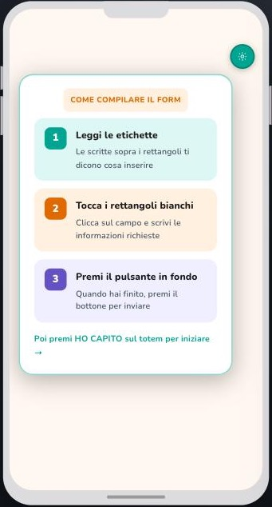
28Digital (ex EIT Digital) Summer School · Toulon · July 2026
PosiBuoy
Smart eco-mooring buoys that replace anchors over Posidonia seagrass and monitor the water, with a booking app for boaters and a Guardian dashboard for marine park managers.
My role: experience design and the booking app with Stefano; the Guardian dashboard with Flavio and Stefano; concept, personas and pitch with the whole team of 6.
- 2 of 4personas were non-human: the seagrass and a seahorse
- 3working proofs of concept: app, dashboard, sensor buoy
- 2 weeksfrom problem to pitch, with simulated data
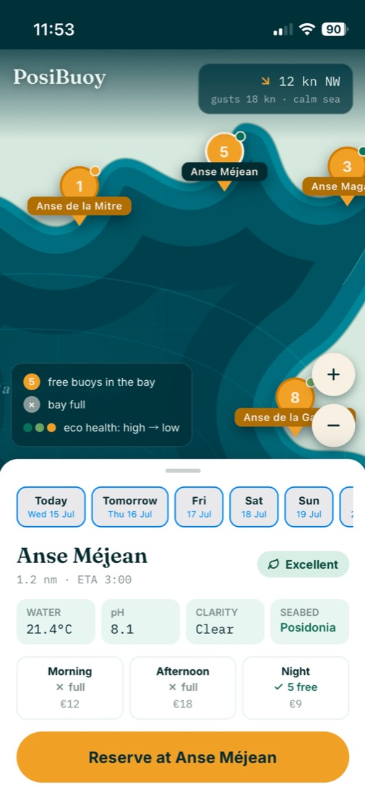
The brief · a two-week business case
We gave the seagrass a voice
The summer school asked international teams to turn an intelligent embedded system into a business case, judged half on the pitch and half on the report. Our problem: anchors tear up Posidonia meadows, and today they are only checked by periodic field surveys.
- 4 personas, two of them non-human, so the ecosystem had needs on the table next to boaters and the park guardian.
- A day before and after PosiBuoy for each persona; the journeys defined the key features.
- 3 proofs of concept and a business model to fund the buoys.
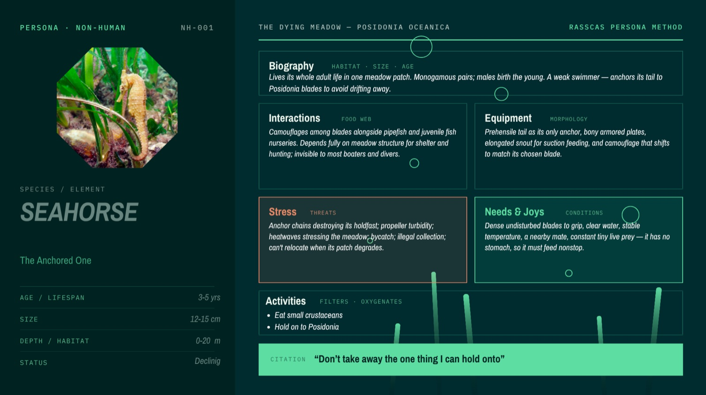
Don’t take away the one thing I can hold onto.The seahorse persona, one of the two non-human personas.
Boater app · proof of concept, simulated data
Book a slot in a bay, not a buoy
- Slots, not buoys. Morning, afternoon or night in a protected bay; a free buoy is assigned on arrival.
- Overbooking per bay, based on the expected no-show rate, so buoys stay in use.
- A refundable deposit discourages no-shows and mooring outside the slot.
- The sea before you leave: water, wind and seabed readings from the buoys.
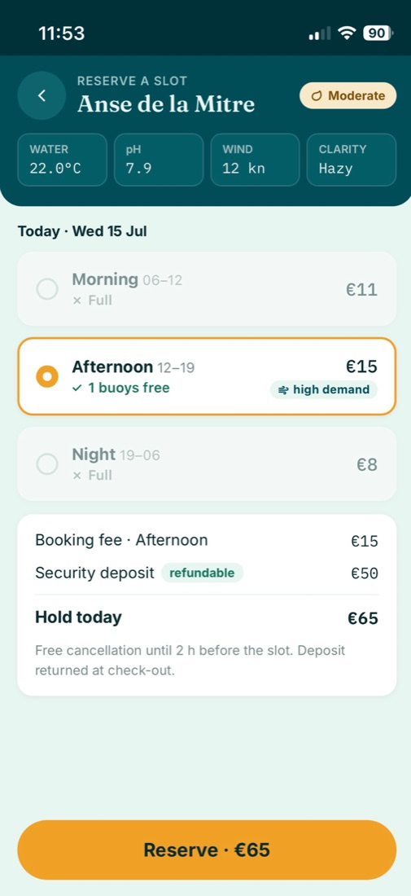
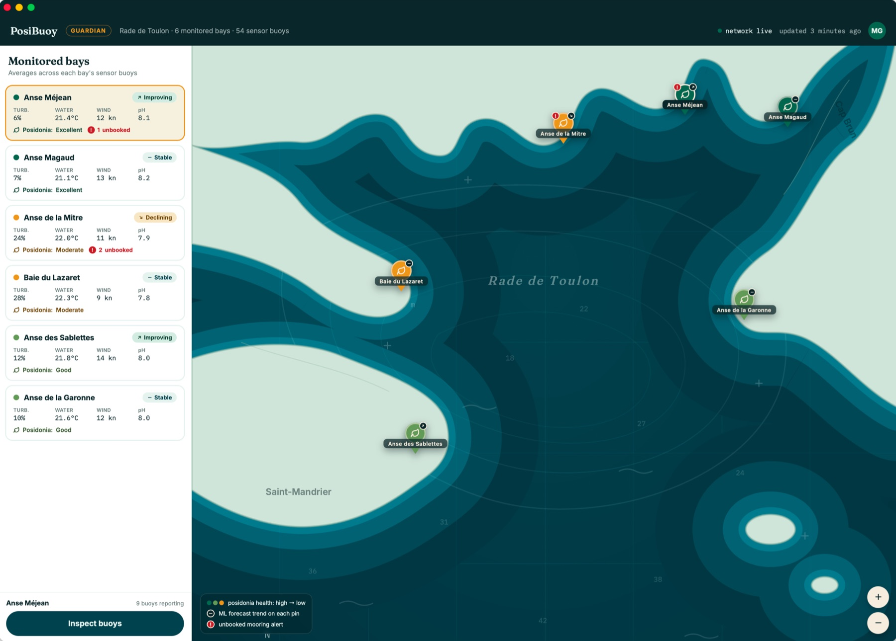
Open the Guardian dashboard (opens in a new tab)For park managers · with Flavio and Stefano
Every reading comes with its meaning
- Bay first, then buoy. Each bay averages its buoys; open one to see each buoy.
- Readings are interpreted, from below to above the expected range for that spot, so anomalies stand out.
- Seagrass health and alerts: a Posidonia forecast per bay and unbooked moorings flagged on the map.
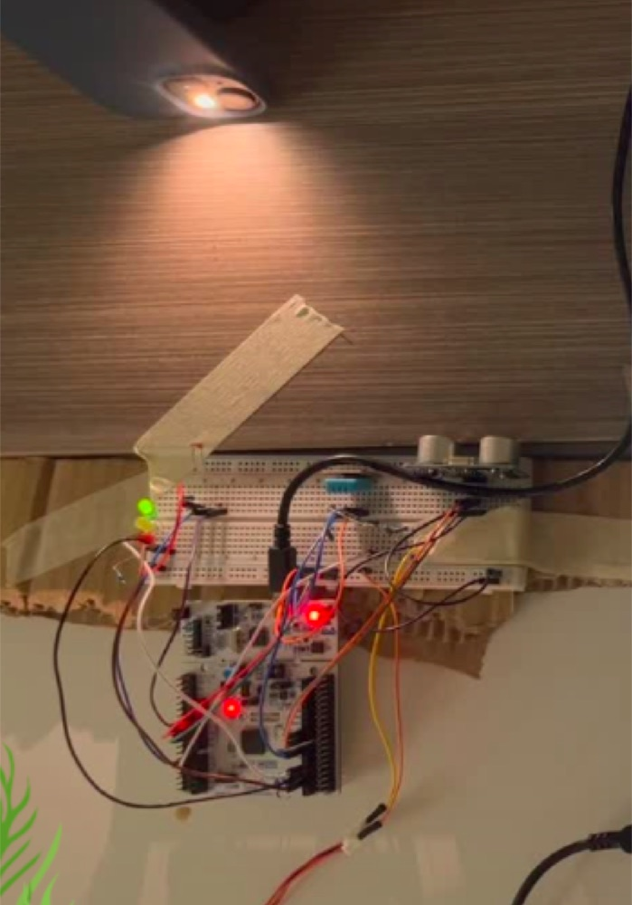
Sensor buoy prototype, built by Flavio: STM32 with turbidity, wind, temperature and distance sensors; LEDs show free, reserved or occupied. Watch the buoy prototype demo (opens in a new tab)
Università di Trento · Individual project · since Oct 2026 In progress
Is it listening well?
AI note-takers tell you whether they are recording, not how well they are capturing. I’m designing real-time feedback on capture quality, while the meeting can still be fixed.
My role: individual project, so the research, concept and prototypes are mine; supervised by Prof. Massimo Zancanaro in Prototyping Interactive Systems.
“Not a smarter AI. A more honest one.”
The problem · presented 7 Oct 2026
One light, on or off, while the notes go wrong
6 people, 1 hour, one note-taker on the table. Two colleagues talk over each other, someone at the far end speaks quietly, a client switches to English. Next day the summary gives the decision to the wrong person, and there is no audio left to check.
- 12% vs 47%transcription errors on the same meetings, headset vs mic on the tableNOTSOFAR-1, Interspeech 2024
- 22% vs 59%errors when speakers switch languageWhisper, Interspeech 2025
But feedback helps
½the mistakes when speakers saw their own live captionsKang et al., CHI EA 2024
A category gap: Plaud, Bee, Limitless and Otter all show one signal, recording or not.
Planned · not done yet
What I assume, and how I’ll check
I assume
- These failures happen often enough to matter.
- People would act on a signal: move closer, ask to repeat, mark a moment.
- Signals won’t distract from the conversation.
I’ll check with
- Critical-incident interviews with people who rely on AI notes.
- Staged meetings with injected noise, overlap and distance.
- Wizard-of-Oz tests of the signals, triggered by a hidden operator.
In scope: the person recording, during the meeting; fixable signals (distance, noise, overlap, device health) and a “re-check this” mark for recovery afterwards. Out: improving the AI model, the consent of the people being recorded (a separate design problem), the full app.
See the pitch deck (opens in a new tab)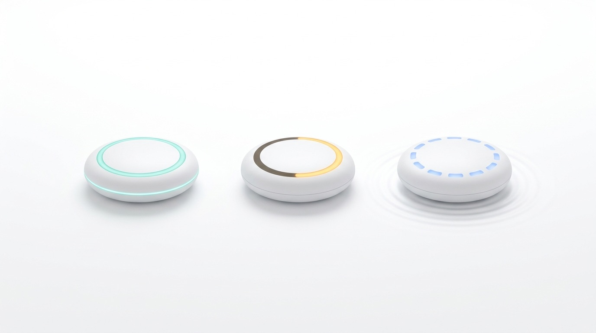
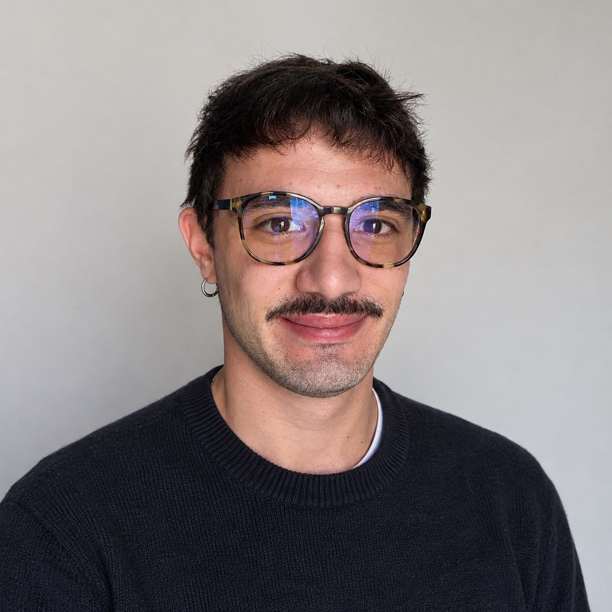
Looking for a master’s thesis internship from March 2027.
Under an agreement with the Università di Trento (28Digital). EU citizen. Happy to talk about UX research, interaction design, cognitive interaction or prototyping interactive systems.